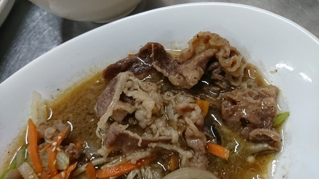

삼겹살
サムギョプサル
豚バラを鉄板でこんがりと。サンチュとキムチで巻いて召し上がれ。

飾らない家庭の味を、
この街で長く。
特別な日のためだけの店ではありません。仕事帰りにふらりと、休日の昼にご家族で。黄色い壁の扉を開ければ、鉄板の音と、あたたかい韓国家庭料理がお待ちしています。
沼津・大手町で、変わらぬ味を続けていく。それがアリラン食堂の役目です。
店のこだわりを読むまずはここから。鉄板を囲んで、韓国の家庭の食卓をどうぞ。
豚バラを鉄板でこんがりと。サンチュとキムチで巻いて召し上がれ。

牛肉と野菜を甘辛く。ごはんが進む、定番の一皿です。

外はカリッ、中はもっちり。マッコリと合わせて。